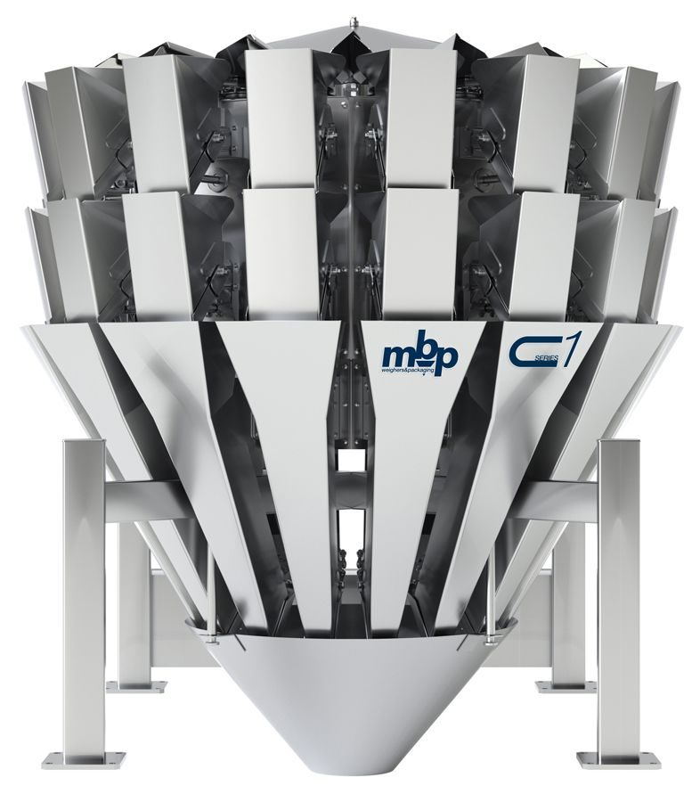

PFM
Вертикальные упаковочные машины
Вертикальная упаковочная машина COMET и весовой дозатор MBP C1 Series. Оборудование подбирают под продукт, упаковку и требуемую производительность.
- COMET
- MBP C1 Series
Фотографии и схемы

Описание и комплектация
ВЕРТИКАЛЬНАЯ УПАКОВОЧНАЯ МАШИНА PFM COMET
Комета является выражением высочайшего уровня технологии PFM и дизайна, применяемого к вертикальным упаковщикам. Машина была разработана для высокоскоростной упаковки и круглосуточного применения. Производит пакеты из подушек из рулона термосвариваемой упаковочной пленки.
Товары
Подходит для упаковки гранулированных продуктов (чипсов / чипсов, конфет и многих других) в сочетании с мультиголовочными дозаторами и системами объемного дозирования.
ТЕХНИЧЕСКИЕ ДАННЫЕ:
Новый дизайн корпуса «Герметичная коробка» защищен от проникновения жидкостей и порошков.
Новая высокоскоростная вращающаяся система уплотнения Long Dwell, испытанная при 200 механических циклах в минуту. Уплотнительные щипцы съемные спереди.
Полный сервообмотчик, приводимый в движение бесщеточными серводвигателями с контроллером движения оси.
MMI с цветным сенсорным экраном. Дружественное программное обеспечение оператора. Интегрированный модем для он-лайн Teleservice.
Держатель расширительной катушки с самоцентрирующейся системой.
Мощность подачи ролика контролируется независимым мотором.
Чрезвычайно компактная конструкция для идеального управления и синхронизации с системами подачи благодаря малому расстоянию падения продукта.
ДОЗИРУЮЩАЯ МУЛЬТИГОЛОВА PFM MBP C1 Series
MBP Series C1 - это многофункциональный комбинированный весовой дозатор начального уровня с превосходным соотношением скорости и точности, достигнутым благодаря чрезвычайно низкому «времени регенерации веса». Это 100% сделано в Италии.
В серии C1 экономия, безопасность и производительность значительно увеличились благодаря исследованиям и прикладным технологиям.
Весовые продукты:
Печенье.
Твердые сладости.
Хлопья.
Макаронные изделия.
Корм для домашних животных.
Непродовольственные.
ТЕХНИЧЕСКИЕ ОСОБЕННОСТИ:
Сменные и сменные модули.
Тензодатчик на центральной базе.
Легко очищаемая гладкая структура без скрытых щелей.
Вибрационные основания с оптимальными точными углами вибрации.
Трубчатая стальная рама с единой электронной панелью управления. Легко чистить и дезинфицировать, быстро снимать движущиеся части.
Степень защиты IP65.
Управляется через промышленный ПК.
Проводная сеть типа CAN-Open, защищенная от электромагнитных помех, модульная, с быстрой передачей данных большой емкости.
Мультимедийное программное обеспечение на базе Windows, которым можно управлять удаленно. Настройка параметров уменьшена до трех наборов данных. Остальные параметры вводятся с помощью высокоразвитых автоматических функций реального времени.
Программного обеспечения
Серия C1 оснащена современной операционной системой. Он снабжен пользовательским интерфейсом Multi-Touch, который позволяет получить доступ к любой странице максимум за два шага. Что действительно удивительно, так это то, насколько просто программировать.
Благодаря функциям AVI, ADC и EVA оператор просто программирует конечный вес, верхний и нижний пределы и скорость взвешивания (wpm).
Домашняя страница содержит всю информацию, необходимую для мониторинга рабочего состояния дозатора. Система также может загружать статистические данные во всех обычных форматах.
аппаратные средства
В серии C1 используется мощный встроенный безвентиляторный ПК без встроенных вентиляторов, что является последним трендом в промышленности.
Мощный процессор, который постоянно обновляется с использованием новейших технических разработок, дает возможность использовать высокоразвитое программное обеспечение в реальном времени с самыми современными функциями. 8,6-дюймовый или 12-дюймовый сенсорный экран.
Система проводки CAN-Open обеспечивает всю безопасность, необходимую для предотвращения электромагнитных помех с цифровым сигналом.